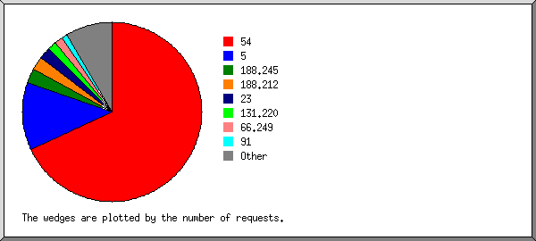
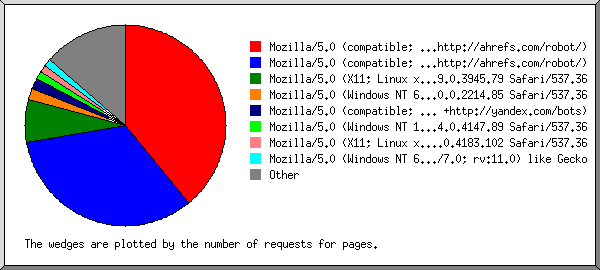
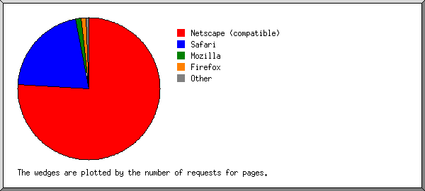
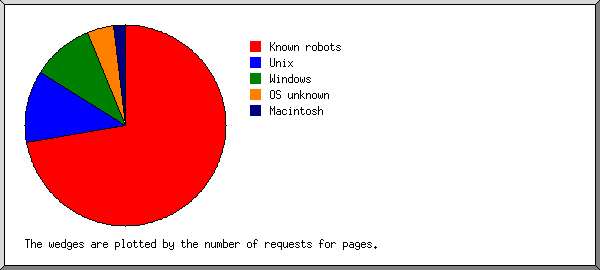
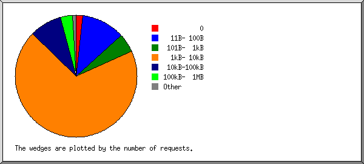
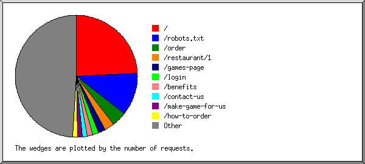

Web Server Statistics for iranbaguette.ir
Web Server Statistics for iranbaguette.ir
Program started on Mon, Mar 30 2020 at 7:34 PM.
Analyzed requests from Wed, Feb 26 2020 at 4:27 AM to Mon, Mar 30 2020 at 1:49 PM (33.39 days).
Web Server Statistics for iranbaguette.irProgram started on Mon, Mar 30 2020 at 7:34 PM.
Analyzed requests from Wed, Feb 26 2020 at 4:27 AM to Mon, Mar 30 2020 at 1:49 PM (33.39 days).
(Go To: Top | General Summary | Monthly Report | Daily Summary | Hourly Summary | Domain Report | Organization Report | Failed Referrer Report | Referring Site Report | Browser Report | Browser Summary | Operating System Report | Status Code Report | File Size Report | File Type Report | Directory Report | Request Report)
Figures in parentheses refer to the 7-day period ending Mar 30 2020 at 7:34 PM.
Successful requests: 90 (17)
Average successful requests per day: 2 (2)
Successful requests for pages: 58 (16)
Average successful requests for pages per day: 1 (2)
Failed requests: 6 (1)
Distinct files requested: 31 (3)
Distinct hosts served: 35 (3)
Data transferred: 2.32 megabytes (129.00 kilobytes)
Average data transferred per day: 71.08 kilobytes (18.43 kilobytes)
(Go To: Top | General Summary | Monthly Report | Daily Summary | Hourly Summary | Domain Report | Organization Report | Failed Referrer Report | Referring Site Report | Browser Report | Browser Summary | Operating System Report | Status Code Report | File Size Report | File Type Report | Directory Report | Request Report)
Each unit ( ) represents 2 requests for pages or part thereof.
) represents 2 requests for pages or part thereof.
| month | #reqs | #pages | |
|---|---|---|---|
| Feb 2020 | 40 | 13 |   |
| Mar 2020 | 50 | 45 |  |
Busiest month: Mar 2020 (45 requests for pages).
(Go To: Top | General Summary | Monthly Report | Daily Summary | Hourly Summary | Domain Report | Organization Report | Failed Referrer Report | Referring Site Report | Browser Report | Browser Summary | Operating System Report | Status Code Report | File Size Report | File Type Report | Directory Report | Request Report)
Each unit () represents 1 request for a page.
| day | #reqs | #pages | |
|---|---|---|---|
| Sun | 12 | 10 |  |
| Mon | 10 | 9 | |
| Tue | 12 | 12 | |
| Wed | 37 | 10 | |
| Thu | 9 | 7 | |
| Fri | 9 | 9 | |
| Sat | 1 | 1 | |
(Go To: Top | General Summary | Monthly Report | Daily Summary | Hourly Summary | Domain Report | Organization Report | Failed Referrer Report | Referring Site Report | Browser Report | Browser Summary | Operating System Report | Status Code Report | File Size Report | File Type Report | Directory Report | Request Report)
Each unit () represents 1 request for a page.
| hour | #reqs | #pages | |
|---|---|---|---|
| 0 | 2 | 1 | |
| 1 | 5 | 5 | |
| 2 | 12 | 12 | |
| 3 | 4 | 3 | |
| 4 | 6 | 6 | |
| 5 | 1 | 1 | |
| 6 | 0 | 0 | |
| 7 | 1 | 1 | |
| 8 | 1 | 1 | |
| 9 | 0 | 0 | |
| 10 | 0 | 0 | |
| 11 | 2 | 2 | |
| 12 | 1 | 0 | |
| 13 | 3 | 2 | |
| 14 | 0 | 0 | |
| 15 | 10 | 10 | |
| 16 | 2 | 2 | |
| 17 | 29 | 2 | |
| 18 | 2 | 2 | |
| 19 | 2 | 2 | |
| 20 | 4 | 3 | |
| 21 | 1 | 1 | |
| 22 | 0 | 0 | |
| 23 | 2 | 2 | |
(Go To: Top | General Summary | Monthly Report | Daily Summary | Hourly Summary | Domain Report | Organization Report | Failed Referrer Report | Referring Site Report | Browser Report | Browser Summary | Operating System Report | Status Code Report | File Size Report | File Type Report | Directory Report | Request Report)
Listing domains, sorted by the amount of traffic.
| #reqs | %bytes | domain |
|---|---|---|
| 90 | 100% | [unresolved numerical addresses] |
(Go To: Top | General Summary | Monthly Report | Daily Summary | Hourly Summary | Domain Report | Organization Report | Failed Referrer Report | Referring Site Report | Browser Report | Browser Summary | Operating System Report | Status Code Report | File Size Report | File Type Report | Directory Report | Request Report)

Listing the top 20 organizations by the number of requests, sorted by the number of requests.
| #reqs | %bytes | organization |
|---|---|---|
| 28 | 64.59% | 54 |
| 25 | 7.07% | 131.220 |
| 6 | 7.19% | 5 |
| 5 | 66.249 | |
| 4 | 1.13% | 150.249 |
| 3 | 138.246 | |
| 2 | 2.40% | 185.220 |
| 2 | 0.56% | 134.122 |
| 1 | 1.20% | 172.255 |
| 1 | 1.20% | 23 |
| 1 | 1.20% | 165.227 |
| 1 | 0.28% | 52 |
| 1 | 1.20% | 46 |
| 1 | 1.20% | 37 |
| 1 | 1.20% | 199.217 |
| 1 | 1.20% | 84 |
| 1 | 1.20% | 94 |
| 1 | 1.20% | 81.133 |
| 1 | 1.20% | 86 |
| 1 | 1.20% | 89 |
| 3 | 3.59% | [not listed: 3 organizations] |
(Go To: Top | General Summary | Monthly Report | Daily Summary | Hourly Summary | Domain Report | Organization Report | Failed Referrer Report | Referring Site Report | Browser Report | Browser Summary | Operating System Report | Status Code Report | File Size Report | File Type Report | Directory Report | Request Report)
Listing referring URLs, sorted by the number of failed requests.
| #reqs | URL |
|---|---|
| 1 | https://iranbaguette.com/css/UserSheetFa.css |
(Go To: Top | General Summary | Monthly Report | Daily Summary | Hourly Summary | Domain Report | Organization Report | Failed Referrer Report | Referring Site Report | Browser Report | Browser Summary | Operating System Report | Status Code Report | File Size Report | File Type Report | Directory Report | Request Report)

Listing referring sites, sorted by the number of requests.
| #reqs | site |
|---|---|
| 47 | https://iranbaguette.com/ |
| 1 | https://www.ocrsearch.com/ |
(Go To: Top | General Summary | Monthly Report | Daily Summary | Hourly Summary | Domain Report | Organization Report | Failed Referrer Report | Referring Site Report | Browser Report | Browser Summary | Operating System Report | Status Code Report | File Size Report | File Type Report | Directory Report | Request Report)

Listing browsers with at least 1 request for a page, sorted by the number of requests for pages.
| #reqs | #pages | browser |
|---|---|---|
| 25 | 25 | Mozilla/5.0 (X11; Linux x86_64) AppleWebKit/537.36 (KHTML, like Gecko) Chrome/79.0.3945.79 Safari/537.36 |
| 4 | 4 | Mozilla/5.0 (Windows NT 6.3; WOW64; Trident/7.0; rv:11.0) like Gecko |
| 3 | 3 | Mozilla/5.0 (Windows NT 6.1; Win64; x64) AppleWebKit/537.36 (KHTML, like Gecko) Chrome/40.0.2214.85 Safari/537.36 |
| 2 | 2 | Mozilla/5.0 (X11; Linux x86_64) AppleWebKit/537.36 (KHTML, like Gecko) HeadlessChrome/68.0.3440.106 Safari/537.36 |
| 2 | 2 | Mozilla/5.0 (Windows NT 10.0; Win64; x64) AppleWebKit/537.36 (KHTML, like Gecko) Chrome/80.0.3987.106 Safari/537.36 |
| 2 | 2 | Mozilla/5.0 (Windows NT 10.0; Win64; x64) AppleWebKit/537.36 (KHTML, like Gecko) Chrome/80.0.3987.87 Safari/537.36 |
| 29 | 2 | Mozilla/5.0 (iPhone; CPU iPhone OS 13_1 like Mac OS X) AppleWebKit/605.1.15 (KHTML, like Gecko) Version/13.0.1 Mobile/15E148 Safari/604.1 |
| 2 | 2 | Mozilla/5.0 (Windows NT 10.0; Win64; x64; rv:71.0) Gecko/20100101 Firefox/71.0 |
| 2 | 2 | Mozilla/5.0 (Linux; Android 4.2.1; en-us; Nexus 5 Build/JOP40D) AppleWebKit/535.19 (KHTML, like Gecko; googleweblight) Chrome/38.0.1025.166 Mobile Safari/535.19 |
| 2 | 2 | Mozilla/5.0 (Linux; Android 7.0; SAMSUNG SM-G950F Build/NRD90M) AppleWebKit/537.36 (KHTML, like Gecko) SamsungBrowser/5.2 Chrome/51.0.2704.106 Mobile Safari/537.36 |
| 2 | 2 | Mozilla/5.0 (X11; Linux x86_64; rv:68.0) Gecko/20100101 Firefox/68.0 |
| 1 | 1 | Mozilla/5.0 (Windows NT 6.1; WOW64) AppleWebKit/537.21 (KHTML, like Gecko) Chrome/41.0.2228.0 Safari/537.21 |
| 1 | 1 | OCR Search (+https://www.ocrsearch.com/bot.html) |
| 1 | 1 | Mozilla/5.0 (Windows NT 10.0; Win64; x64) AppleWebKit/537.36 (KHTML, like Gecko) Chrome/79.0.3945.130 Safari/537.36 |
| 1 | 1 | Go-http-client/1.1 |
| 1 | 1 | Mozilla/5.0 (Windows NT 10.0; Win64; x64) AppleWebKit/537.36 (KHTML, like Gecko) Chrome/80.0.3987.122 Safari/537.36 |
| 1 | 1 | Mozilla/5.0 (Linux; U; Android 9; zh-cn; MI 6 Build/PKQ1.190118.001) AppleWebKit/537.36 (KHTML, like Gecko) Version/4.0 Chrome/66.0.3359.126 MQQBrowser/10.1 Mobile Safari/537.36 |
| 1 | 1 | Mozilla/5.0 (iPhone; CPU iPhone OS 13_3 like Mac OS X) AppleWebKit/605.1.15 (KHTML, like Gecko) CriOS/80.0.3987.95 Mobile/15E148 Safari/604.1 |
| 1 | 1 | Mozilla/5.0 (Windows NT 10.0; WOW64; Trident/7.0; MATBJS; rv:11.0) like Gecko |
| 1 | 1 | Mozilla/5.0 (iPhone; CPU iPhone OS 13_3 like Mac OS X) AppleWebKit/605.1.15 (KHTML, like Gecko) Version/13.0.4 Mobile/15E148 Safari/604.1 |
| 1 | 1 | Mozilla/5.0 (Linux; U; Android 8.1.0; zh-CN; EML-AL00 Build/HUAWEIEML-AL00) AppleWebKit/537.36 (KHTML, like Gecko) Version/4.0 Chrome/57.0.2987.108 baidu.sogo.uc.UCBrowser/11.9.4.974 UWS/2.13.1.48 Mobile Safari/537.36 AliApp(DingTalk/4.5.11) com.alibaba.android.rimet/10487439 Channel/227200 language/zh-CN |
| 5 | 0 | [not listed: 1 browser] |
(Go To: Top | General Summary | Monthly Report | Daily Summary | Hourly Summary | Domain Report | Organization Report | Failed Referrer Report | Referring Site Report | Browser Report | Browser Summary | Operating System Report | Status Code Report | File Size Report | File Type Report | Directory Report | Request Report)

Listing browsers with at least 1 request for a page, sorted by the number of requests for pages.
| # | #reqs | #pages | browser |
|---|---|---|---|
| 1 | 74 | 47 | Safari |
| 41 | 41 | Safari/537 | |
| 31 | 4 | Safari/604 | |
| 2 | 2 | Safari/535 | |
| 2 | 5 | 5 | Mozilla |
| 3 | 4 | 4 | Firefox |
| 2 | 2 | Firefox/68 | |
| 2 | 2 | Firefox/71 | |
| 4 | 1 | 1 | OCR Search (+https: |
| 1 | 1 | OCR Search (+https://www | |
| 5 | 1 | 1 | Go-http-client |
| 1 | 1 | Go-http-client/1 | |
| 5 | 0 | [not listed: 1 browser] |
(Go To: Top | General Summary | Monthly Report | Daily Summary | Hourly Summary | Domain Report | Organization Report | Failed Referrer Report | Referring Site Report | Browser Report | Browser Summary | Operating System Report | Status Code Report | File Size Report | File Type Report | Directory Report | Request Report)

Listing operating systems, sorted by the number of requests for pages.
| # | #reqs | #pages | OS |
|---|---|---|---|
| 1 | 35 | 35 | Unix |
| 35 | 35 | Linux | |
| 2 | 17 | 17 | Windows |
| 9 | 9 | Windows NT | |
| 8 | 8 | Unknown Windows | |
| 3 | 31 | 4 | Macintosh |
| 4 | 7 | 2 | OS unknown |
(Go To: Top | General Summary | Monthly Report | Daily Summary | Hourly Summary | Domain Report | Organization Report | Failed Referrer Report | Referring Site Report | Browser Report | Browser Summary | Operating System Report | Status Code Report | File Size Report | File Type Report | Directory Report | Request Report)

Listing status codes, sorted numerically.
| #reqs | status code |
|---|---|
| 90 | 200 OK |
| 6 | 404 Document not found |
(Go To: Top | General Summary | Monthly Report | Daily Summary | Hourly Summary | Domain Report | Organization Report | Failed Referrer Report | Referring Site Report | Browser Report | Browser Summary | Operating System Report | Status Code Report | File Size Report | File Type Report | Directory Report | Request Report)

| size | #reqs | %bytes |
|---|---|---|
| 0 | 3 | |
| 1B- 10B | 0 | |
| 11B- 100B | 5 | |
| 101B- 1kB | 5 | 0.15% |
| 1kB- 10kB | 42 | 10.71% |
| 10kB-100kB | 30 | 43.44% |
| 100kB- 1MB | 5 | 45.70% |
(Go To: Top | General Summary | Monthly Report | Daily Summary | Hourly Summary | Domain Report | Organization Report | Failed Referrer Report | Referring Site Report | Browser Report | Browser Summary | Operating System Report | Status Code Report | File Size Report | File Type Report | Directory Report | Request Report)

Listing extensions with at least 0.1% of the traffic, sorted by the amount of traffic.
| #reqs | %bytes | extension |
|---|---|---|
| 8 | 54.99% | .jpg [JPEG graphics] |
| 58 | 35.69% | [directories] |
| 6 | 2.88% | .png [PNG graphics] |
| 6 | 2.75% | .js [JavaScript code] |
| 1 | 1.97% | .woff |
| 6 | 1.72% | .css [Cascading Style Sheets] |
| 5 | [not listed: 1 extension] |
(Go To: Top | General Summary | Monthly Report | Daily Summary | Hourly Summary | Domain Report | Organization Report | Failed Referrer Report | Referring Site Report | Browser Report | Browser Summary | Operating System Report | Status Code Report | File Size Report | File Type Report | Directory Report | Request Report)

Listing directories with at least 0.01% of the traffic, sorted by the amount of traffic.
| #reqs | %bytes | directory |
|---|---|---|
| 6 | 44.80% | /upload/ |
| 63 | 35.69% | [root directory] |
| 8 | 13.08% | /img/ |
| 6 | 2.75% | /js/ |
| 1 | 1.97% | /font/ |
| 6 | 1.72% | /css/ |
(Go To: Top | General Summary | Monthly Report | Daily Summary | Hourly Summary | Domain Report | Organization Report | Failed Referrer Report | Referring Site Report | Browser Report | Browser Summary | Operating System Report | Status Code Report | File Size Report | File Type Report | Directory Report | Request Report)

Listing files with at least 20 requests, sorted by the number of requests.
| #reqs | %bytes | last time | file |
|---|---|---|---|
| 58 | 35.69% | Mar/30/20 1:49 PM | / |
| 19 | 7.55% | Mar/29/20 8:01 PM | /?5.62.62.171 |
| 32 | 64.31% | Mar/30/20 1:16 PM | [not listed: 28 files] |